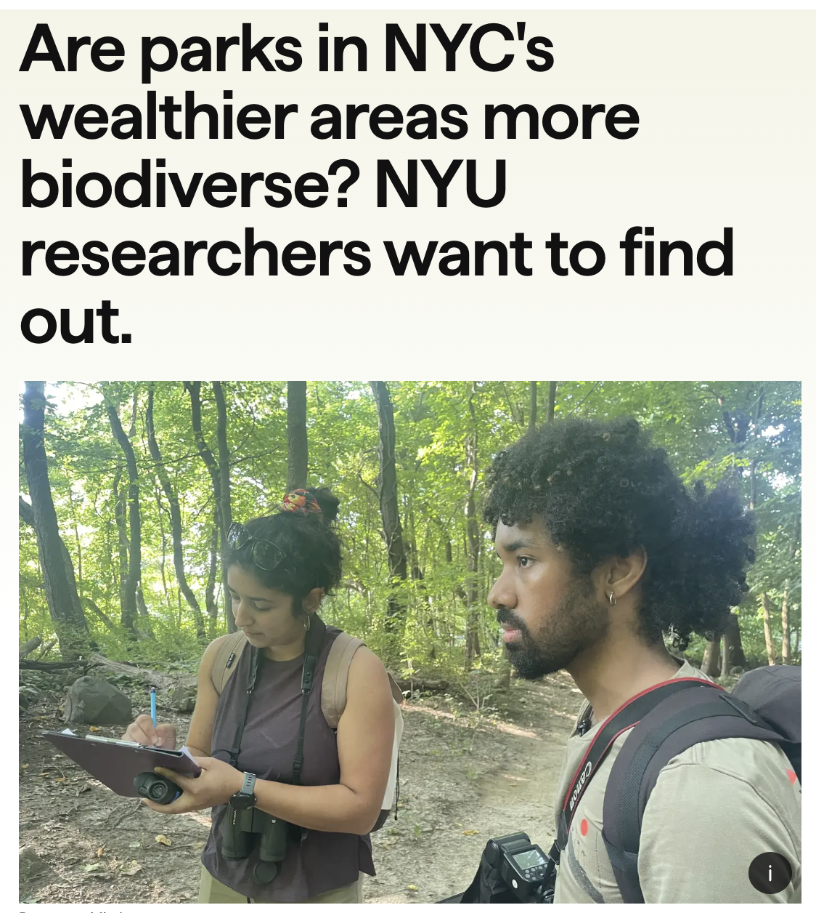

Press, Media and Sci Comm
Radio and podcasts
WYNC News and NPR Morning Edition. July 20, 2024
Borrows of NYC: Comedy and trivia loosely inspired by urban wildlife. Podcast. New York, NY, USA. May 16, 2024
Nerd Nite Reno. “Getting Nerdy About Light Pollution”. Podcast. July 2020
Featured press and science media
Science Is Revealing the Social Disparities at the Root of Urban Ecosystems.. Burakoff, M. Audubon Magazine. Dec, 2024
Are parks in NYC’s wealthier areas more biodiverse? NYU researchers want to find out. Misdary, R. The Gothamist. July 20, 2024
The Ties Between Wealth and Wildlife in NYC: An Interview with Dr. Valentina Alaasam.. Sargent, A. Integrative and Comparative Biology Blog. July 2, 2024
What To Know about the 2024 Total Eclipse: Tips from NYU experts on eye safety, photography, animal behavior, and more ahead of the sun’s big show.. Reynolds E. NYU News. March 29, 2024
Stress in the city.. Rawat, S. The Biologist. September 11, 2023
Artificial light at night: A research field in action.. Ogden LE. BioScience. Volume 73, Issue 7, July 2023, Pages 469–475
Want to help wildlife? Turn off your lights.. Gibbons, S. National Geographic. April 3, 2023
How light pollution disrupts plants’ senses.. Hirschlag A. BBC Future. March 8, 2023
Urban Wildlife: How noise and light pollution affect birds.. Johnson K. The Hitchcock Project for Visualizing Science. December 20, 2020
Invited public talks and webinars
Soapbox Science, New York, NY. August 23, 2024
The Myrrh the Merrier: Comedy and trivia loosely inspired by the holidays. Live show. New York, NY, USA. December 17th, 2024.
Borrows of NYC: Comedy and trivia loosely inspired by urban wildlife.. Live show. New York, NY, USA. May 16, 2024
Smithsonian National Museum of Natural History. Live Webinar. April 12, 2023
Science in the wild: Patagonia and Friends of Nevada Wilderness. Live Talk. Reno, NV, USA. March 9, 2023
Lahontan Audubon Society. Reno, NV, USA. March 28, 2023
Altacal Audubon Society. Live Virtual Talk. February 20, 2023
San Francisco Bay Bird Observatory: Birdy Hour. San Francisco, CA, USA. May 16, 2022
Earth Day and Light Pollution – Air and Space Live Chat. Smithsonian National Air and Space Museum. May 4, 2021


